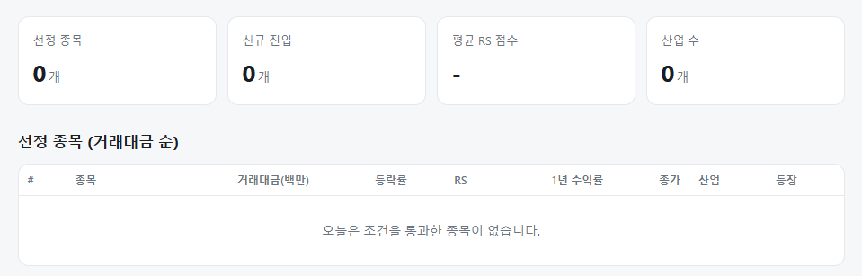
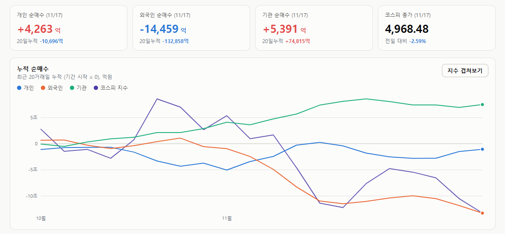

매일의 주도주 정리를 위해 기록합니다.
연속적으로 나온 종목들 또는 상승 후 조정받는 종목 위주로 리서치 해보시면 좋을 것 같습니다.

*오늘 선정된 종목은 없습니다.
#주도섹터
일부 소비재(백화점) 및 건강관리기술
주요 업종 및 종목: 백화점과일반상점(+1.70%), 건강관리기술(+1.66%), 문구류(+1.62%), 사무용전자제품(+1.21%), 부동산(+0.69%), 신세계, 루닛.
분석: 시장 전반의 조정 속에서도 백화점과일반상점(+1.70%), 건강관리기술(+1.66%) 등 일부 업종이 제한적인 상승 흐름을 보였습니다. 대형주 중 뚜렷하게 상승을 주도한 섹터는 부재했으며, 변동성을 피해 일부 방어적 성격의 중소형주로 자금이 분산되는 양상을 띠었습니다.
#조정섹터
반도체 및 핵심 산업재
주요 업종 및 종목: 전기유틸리티(-5.88%), 전기장비(-4.78%), 우주항공과국방(-4.40%), 기계(-4.26%), 전기제품(-3.60%), 전자장비와기기(-3.28%), 반도체와반도체장비(-2.56%), 삼성전자(-3.05%), 삼성전기(-4.20%), SK하이닉스(-1.61%), 삼성SDI(-4.00%), LG에너지솔루션(-3.92%), 두산에너빌리티(-5.12%).
분석: 전기유틸리티(-5.88%), 전기장비(-4.78%), 우주항공과국방(-4.40%), 기계(-4.26%) 등 인프라 및 산업재 업종의 하락폭이 컸습니다. 반도체와반도체장비(-2.56%) 업종 역시 조정을 받았으며, 시가총액 상위주인 삼성전자(-3.05%), SK하이닉스(-1.61%), 삼성SDI(-4.00%), 삼성전기(-4.20%) 등 핵심 IT 대형주로 외국인 매도 물량이 집중되며 지수 하락을 이끌었습니다.
#수급동향

코스피 지수는 -2.59% 하락한 4,968.48로 마감하며 심리적 지지선인 5,000선을 하회했습니다. 코스닥 지수 역시 -2.34% 하락한 650.06을 기록하며 동반 조정을 받았습니다.
유가증권시장에서 외국인 투자자는 1조 4,463억 원(20일 누적 -13조 2,858억 원)을 순매도하며 전일에 이어 매도 기조를 이어갔습니다. 반면 기관 투자자는 5,354억 원(20일 누적 +7조 4,815억 원)을 순매수하며 대응에 나섰고, 개인 투자자 역시 4,302억 원을 순매수하며 수급 방어에 참여했습니다.
상승 종목은 189개에 그친 반면 하락 종목은 709개에 달해 전반적인 약세 흐름이 지속되었습니다. 전일에 이어 2차전지, IT 하드웨어, 반도체 등 시가총액 상위 대형주를 중심으로 수급 이탈이 나타났습니다.
수출 통제가 '칩'에서 '접속'으로 넘어갔다
어제 글에서 엔비디아 문제가 "사람에서 정책으로" 옮겨갔다고 썼습니다. 하루 만에 그 정책이 행정 규칙으로 나왔습니다. 미국 상무부가 월요일 발표한 잠정 규칙은 중국 기업이 제3국 데이터센터를 통해 미국 AI 칩을 원격으로 빌려 쓰는 길을 막습니다.
① 무엇이 달라졌나 — 목적지에서 사용자로
지금까지 수출 통제는 칩이 어디로 가느냐를 막았습니다. 중국으로 가는 첨단 칩은 금지, 그 밖의 나라는 대체로 허용이었습니다. 그러자 생긴 것이 우회로입니다. 칩은 말레이시아나 싱가포르의 데이터센터에 합법적으로 설치되고, 중국 기업은 그 컴퓨팅을 인터넷으로 빌려 씁니다. 칩은 국경을 넘지 않았지만 연산 능력은 넘어간 셈입니다.
이번 규칙은 그 칩을 누가 쓰느냐를 묻습니다. 상무부는 "기존 접근 제한이 제3국 데이터센터를 활용한 원격 컴퓨팅으로 우회되지 않도록 하기 위한 것"이라고 밝혔습니다. 눈에 띄는 대목은 상무부가 이 규칙을 재무부와 국가안보회의(NSC)가 "작성했고 그 지시에 따라" 마련했다고 명시한 점입니다.
② 규칙의 구조 — 두 겹의 허가와 하나의 예외
첫 번째 겹은 나라입니다. 싱가포르, 말레이시아, 태국, 인도네시아, 브라질로 가는 첨단 AI 칩은 건별 심사를 거쳐 허가를 받아야 합니다.
두 번째 겹은 고객입니다. 전 세계 어디에 있든, 중국 등 무기금수 대상국에 본사를 둔 기업에 일정 규모 이상의 컴퓨팅을 제공하는 데이터센터로 가는 칩도 허가 대상입니다. 기준은 합산 처리성능(TPP) 1,200만이고, 해설 자료의 추정으로는 H100·H200 약 758개, B200 약 333개에 해당합니다. 대형 데이터센터 기준으로는 아주 낮은 문턱입니다. 이미 이런 고객을 받고 있는 데이터센터는 발효일로부터 90일 안에 허가를 받아야 합니다.
예외는 미국 본사 기업입니다. 마이크로소프트, 아마존, 오라클 같은 회사는 매달 거래 상대와 물량을 보고하는 조건으로 5개국 허가에서 빠집니다. 정리하면 하이퍼스케일러의 동남아 투자는 살고, 중국계 고객을 받는 현지 데이터센터가 막힙니다.
규칙은 연방관보에 게재되는 즉시 효력이 생기고, 게재일은 목요일로 예정돼 있습니다.
③ 크기를 가늠하기 어렵다는 것이 문제다
엔비디아의 2025 회계연도 싱가포르 매출은 약 240억 달러로 전년의 4배 가까이 늘었고, 전체 매출의 약 18%였습니다. 그런데 이 숫자는 고객의 청구지 기준이라 전부가 중국행 물량은 아닙니다. 게다가 엔비디아는 지난해 기준을 고객 본사 소재지로 바꿨습니다. 그 결과 미국 매출 비중이 47%에서 69%로 뛰었고 싱가포르는 '기타'로 합쳐져 보이지 않게 됐습니다.
숫자가 사라진 것이지 물량이 사라진 것이 아닙니다. 그래서 정확한 표현은 “18%가 날아간다”가 아니라 ”그 18% 중 얼마가 중국계 수요였는지 아무도 모른다"입니다. 어제의 -5.28%는 손실의 크기가 아니라 그 불확실성의 가격에 가깝습니다.
참고로 상무부 스스로는 이 규칙으로 늘어날 허가 신청을 연간 약 100건으로 추정했습니다.
④ 수요는 사라지나, 옮겨가나
조지타운대의 한나 도먼은 해외 접속이 막히면 오히려 중국 내 칩 수요가 늘 수 있고, 중국은 그 수요를 자체 충당할 능력이 아직 없다고 봤습니다. 반대로 가장 직접 타격을 받는 곳은 중국 기업의 데이터센터 허브가 되려던 말레이시아입니다. 외교협회의 조슈아 컬랜칙은 "말레이시아에는 재앙이 될 수 있다"고 했습니다.
지난주 데이터센터 규제 글에서 "부지가 사라지는 것과 수요가 사라지는 것은 다르다"고 썼습니다. 같은 질문입니다. 중국 기업의 AI 수요 자체는 그대로인데, 그 수요가 미국 칩으로 채워질 통로가 좁아집니다. 미국 칩 입장에서는 실제로 줄어드는 물량입니다.
⑤ 메모리로 번역하면
한국 투자자에게 필요한 부분입니다. 경로는 간접적입니다. 중국계 클라우드가 동남아에서 빌려 쓰려던 GPU 주문이 막히면, 그 GPU에 탑재될 HBM도 함께 줄어듭니다.
다만 HBM은 이미 중국 직수출이 막혀 있어서 새로 잃는 것은 엔비디아 칩에 실려 가던 간접 물량입니다. 그리고 공급이 부족한 구간에서는 빠진 물량을 줄 서 있던 다른 고객이 채울 수 있습니다. 앞으로는 빠진 빈자리가 채워지는 속도에 달려 있습니다.
내일 아침 엔비디아가 불확실성에 어떤 숫자를 보여주는지와 AI 투자·보증 등 연속성이 이어질지가 정말 중요해졌습니다.
오늘 하루도 수고하셨습니다!